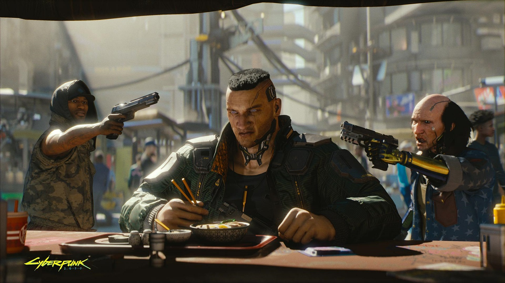
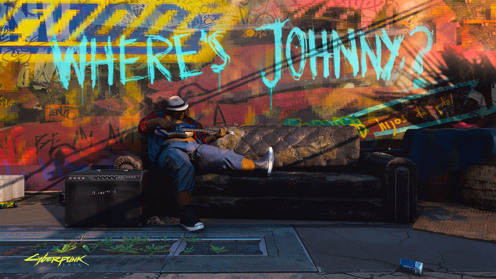

From the creators of The Witcher 3, Cyberpunk 2077 is an open-world, action-adventure story set in Night City, a megalopolis obsessed with power, glamour and body modification. You play as V, a mercenary outlaw going after a one-of-a-kind implant that is the key to immortality. You can customize your character’s cyberware, skillset and playstyle, and explore a vast city where the choices you make shape the story and the world around you.
OUT 16 APRIL 2020
About
Cyber
Punk
2077
Cyberpunk 2077 is a neon cyberpunk game that has The Witcher 3 developer CD Projekt Red moving from a gritty, high fantasy world to an equally gritty, science fiction world metropolis. It's based off the pen-and-paper RPG of the same name, but plays a hell of a lot like The Matrix game we've always wanted.
Cyberpunk 2077 is a game that looks vastly different from its developer's The Witcher series, with towering neon skyscrapers, bionic enhancements and a focus on vertical movement rather than wide open plains. It's also all in first-person.
At E3 2019 we learned a lot more about the plot of the game, which features the one and only Keanu Reeves. Reeves plays a character named Johnny Silverhand who's embedded in a biochip that's placed in the main character's brain.
In order to unlock the secrets to the biochip, what basically becomes the main thread of the game, Silverhand will guide you to Alt Cunningham, the most legendary net runner of all-time. The only problem? She’s dead. But her consciousness lives on the web and you’ll need to do whatever it takes to track her down – including, but not limited to, befriending or eliminating leaders of the biggest gangs in Night City.


Release
Date
April 16, 2020
There's still a while to wait before we can officially get our hands on Cyberpunk 2077 but, from what we've seen and heard so far, it seems like CD Projekt Red's dystopian RPG will definitely be worth the wait.
Landing on Xbox One, PC, and PS4, Cyberpunk 2077 looks set to be a vast open-world game, draped in dizzying neon colors, and packed with more branching storylines than you could shake a drone at.
In the game’s first official teaser trailer, it was stated that the game will be coming “when it’s ready,” but now we have an official release date: April 16, 2020, care of the E3 2019 trailer.
This is despite an investor call in early 2016 that suggested that Cyberpunk 2077 would be released before June 2019. It was also said in this call that CD Projekt Red is planning to release two new triple A RPGs before 2021.
It was later clarified in forums that Cyberpunk 2077 would be the first of these games to arrive and work on the second would not start before Cyberpunk 2077 was finished.
Considering The Witcher 3 took around three and a half years to develop, a 2019 release didn't seem unmanageable for the studio. But the scale of the development, as well as rumors of the game being a cross-gen Xbox Two and PS5 title, it makes sense that the game has taken longer than initially anticipated.